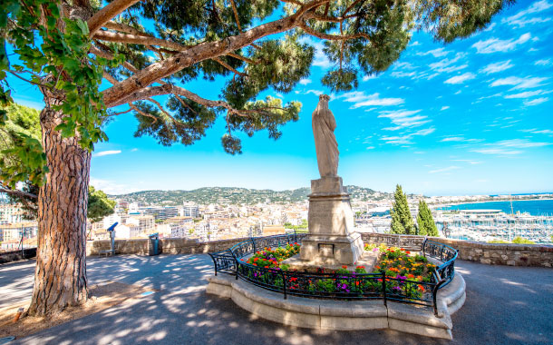
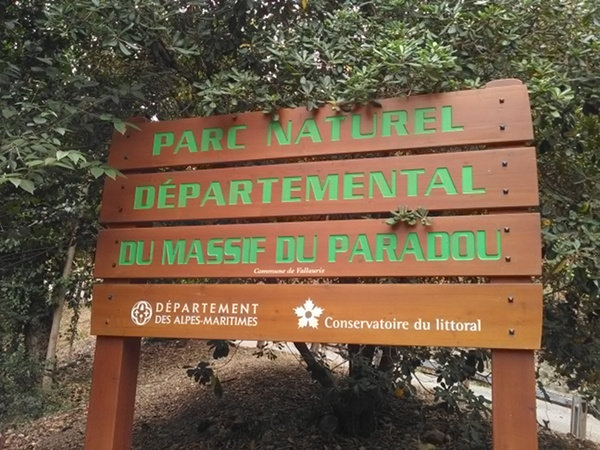
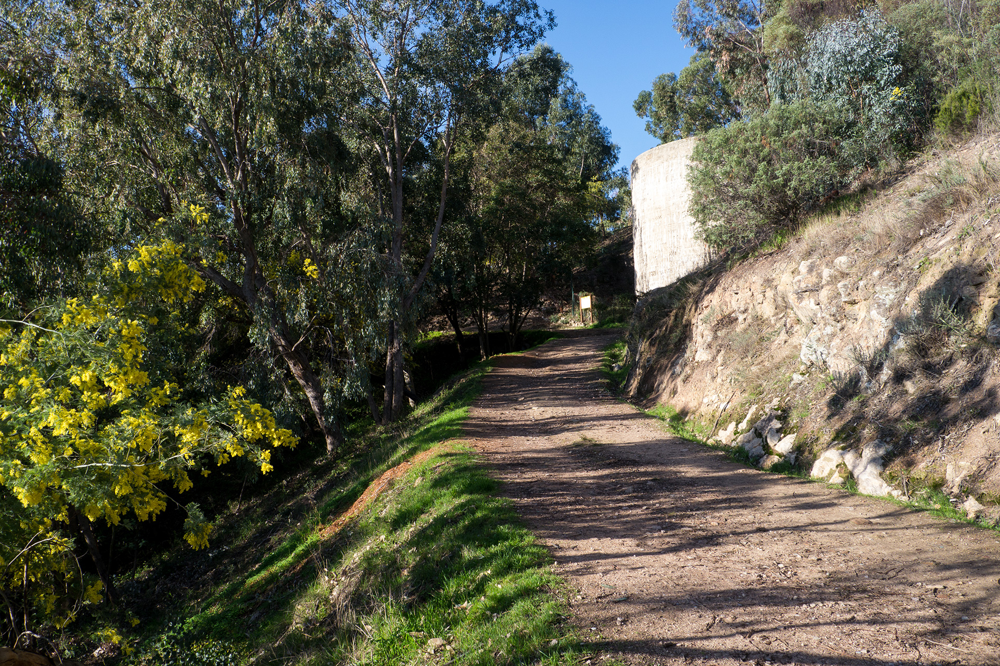
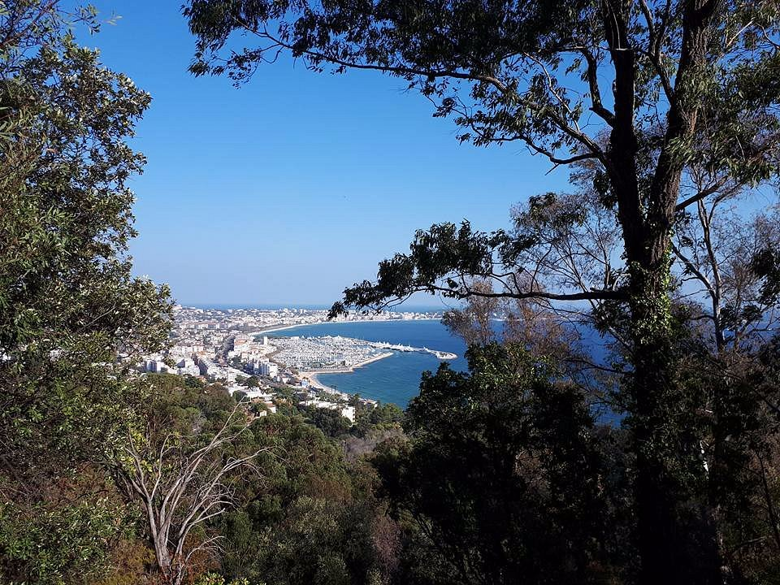

Les différents parcs publics
Parc de la Croix-des-Gardes
Cet espace naturel sensible se situe au cœur de la Ville de Cannes à moins d’un kilomètre à vol d’oiseau de l’emblématique Croisette. Le Conservatoire du littoral est désormais le propriétaire du site, ce poumon vert de Cannes, où ses objectifs sont la préservation du milieu, l’accueil du public et la valorisation du patrimoine naturel et culturel. Ce parc naturel forestier de la Croix-des-Gardes propose de nombreuses balades accessible aux familles, il n'y a pas moins de 5 parcours allant d'1,5 km à 5,2 km traversant 80 hectares boisés et ponctués de 5 belvédères, pour admirer un panorama à 360° sur la baie de Cannes, le massif de l'Estérel et les Préalpes.. Le nom de la Croix-des-Gardes est issu d’une légende qui remonte au règne de François Ier. En 1525, en pleine Renaissance, le Roi bâtisseur de Chambord et du Camp du Drap d’or installa au sommet de la colline où se trouve la croix, une garnison de gardes suisses, élite de l’armée royale. Grâce à la vue dominante de la colline de la Croix-des-Gardes, ils étaient bien placés pour surveiller la mer et voir apparaître à l’horizon les bateaux pirates ou autres embarcations suspectes. Ils pouvaient donc ainsi observer les éventuelles attaques, des îles de Lérins jusqu’au massif de l’Estérel, et, par jour de beau temps, jusqu’à la presqu’île de Saint-Tropez.


Parc du Paradou
Voici un endroit paisible, en dehors de toute agitation, formidable pour qui aime la nature à proximité de la ville. C’est une promenade facile d’accès dans un cadre magnifique et sauvage. On vient s’y poser avec un bouquin, promener son chien, faire une petite sortie en famille, trouver la paix et le silence, ainsi qu’une fraîcheur bien agréable en plein été. Ce parc, ouvert toute l’année est une superbe promenade de 2800 m qui vous prendra environ 1h30 aller retour. Un havre de pleine nature de 12 hectares à quelques encablures du littoral azuréen. Un espace protégé avec de nombreuses essences méditerranéennes et une végétation de maquis. A chaque saison une couleur différente ! Les larges allées en pente douce sont bordées par de majestueux arbres centenaires : des eucalyptus géants, des bambous immenses, de somptueux mimosas qui embaument en février et mars Il offre des points de vues panoramique sur Golfe Juan, le cap d’Antibes et les îles de Lérins. Principalement composé de roche tendre (gypse) et de calcaire le parc du Paradou est arboré d’eucalyptus, de mimosas et de chênes. En son centre et profitant d’une source d’eau, une bambouseraie s’est développée à proximité des vallons. Le long des chemins, ce sont des iris violets qui ornent le parcours. Le parc du Paradou a été exploité au cours du siècle dernier pour la culture des plantes ornementales et horticoles. En 1914, un gigantesque bassin de 1847 m2 de contenance a été construit pour permettre l’irrigation de ces cultures. En 1920, on dénombrait 400 orangers, 16000 rosiers, 600 mimosas et une collection d’eucalyptus exceptionnelle. Le parc du Paradou a un environnement favorable pour le pic vert, le rossignol Philomèle, les passereaux ou encore le pinson. Vous pourrez vous stationner sur la route devant le parc, une dizaine de place de parking est à disposition.
  Parc Départemental du San Peyre
Le parc du San Peyre situé à Mandelieu-la-Napoule s’étend sur 18 hectares et propose un magnifique panorama sur la mer, les vallées de la Siagne et de l’Argentière, le château de La Napoule, la baie de Cannes et les roches rouges de l’Estérel. Il a été acquis en 1964 par le département. Le parc du San Peyre est boisé de pins, de chênes lièges et de mimosas. On y retrouve aussi des cactées et du maquis (bruyère, cystes, arbousiers…). Des sentiers de promenade serpentent jusqu’au sommet où le visiteur découvre le magnifique panorama. Un sentier de découverte démarre en bordure du boulevard de la Ginesta. Durant votre balade vous pourrez voir et entendre : Rossignols, rouges-gorges, roitelets, Bouscarles de Cetti… Deux zones de stationnement existent :
- l'une située boulevard du Bon Puits (près du cimetière)
- l'autre au bout du boulevard de la Ginesta.
- Table d'orientation : Depuis la table d'orientation située en partie sommitale, les visiteurs disposent d’une vue imprenable depuis l’Estérel jusqu’aux sommets du Mercantour en passant par la vallée de la Siagne et les Préalpes. Cette position dominante vous permet d’apercevoir la vallée de l’Argentière, le château de La Napoule, édifice bâti dans les années vingt par le sculpteur H. Clews, la baie de Cannes ainsi que les îles de Lérins.
- Promenades pédestres : Des sentiers de promenade serpentent d'abord dans le sous-bois de chênes-lièges puis à travers le maquis jusqu'au sommet du mamelon où le visiteur découvre alors un magnifique panorama.
- Parcours sportif de 2 kilomètres